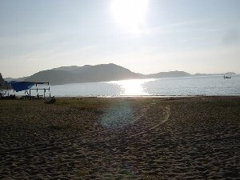
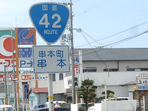

紀伊半島３３４ｋｍサイクリング＆野宿 | 2005年8月 |
|---|---|
| プロローグ： 私はその計画された走行距離５２０ｋｍに圧倒され、「俺、大丈夫なの？ 自分の自転車すら持ってないよ。」と何度、ＲＹＵＵさんに聞いたことか。 ずっとスポーツしてきたから、少しは体力に自信は有りましたが、荷物、距離、峠(長くて急な登り坂)、ハッキリ言って、その全てがイメージ出来なくて不安でした。 でも、「大丈夫」と言うＲＹＵＵさんの言葉に騙されたし(笑)、自分のアホな挑戦根性が 「面白そう」 と言う言葉になり、まんまと計画に乗ってしまいました。 | |
 走り始める前で、まだ元気なきっかー |  １日目のキャンプ場(ただの砂浜、 他に水道以外何も無し)。 写真は２日目の朝撮った物。一人キャンプの孤独な朝(^_^;) |
| 場所：紀伊半島（東部、南部） 日程：８月７日〜１０日 人：ＩＺＵ、ＲＹＵＵ、きっかー 総走行距離：３３４ｋｍ 総走行時間：２４Ｈ １日の最長距離：１５３ｋｍ 荷物：テント、マット、着替え、輪行バック、等。１０ｋｇ位 風呂(温泉)：不遇にも１，２日目は入れず、 くさいが我慢（笑）。 ３日目は川湯温泉 食事：朝、昼はおにぎり、又はシリアル。 夕はアルファ米。３日目のみ外食 自然：熊野川はゆったり流れる綺麗な川(四万十川よりも綺麗に思えた)で感動した。 川湯温泉は自分で河原の砂を掘って作るタイプ。ワイルドで良いですね〜。 | |
|  紀伊半島最南の町。中心街まで行ったけど、 何にもないので標識を撮ってみました（笑）。 しかし、朝から約４時間掛けてここまで８０ｋｍ走ってきたのに 何にもなく、ガッカリ(-_-;)。 |  川湯へ向かう、熊野川沿いにある滝。 釜が深く、自然のプールとして遊べそう。 飛び込みたいが、目的地へ急がねば。 |
| ＜総評＞ 普段から自転車のトレーニングをしているＩＺＵさん、ＲＹＵＵさんと私との力の違いは明らかで、初日は本当に申し訳ない事にキャンプ場への到着時間が遅れる 等の迷惑を掛けてしまった。 ２日目からは体がチャリ仕様に変わってきて、最終日に再度一緒に走ったときは何とか２人についていけれるようになり、人間の順応能力の高さに驚いた。 気温３０℃を越える暑さ、手の平の痛み、股ズレ、重くバランスの悪い荷物、強烈な峠道にも負けず、また無茶と思える様な走行距離をトライし、走り切れた事は自分の体力・気力への自信にもなりました。 毎日走り終わると、汗による塩の析出で腕が真っ白になっていた。 「この塩が俺にとって宝だ！！」(*^,^*) 誘って頂いたＩＺＵさん、ＲＹＵＵさんに本当に感謝しています。 | |
 | ←川湯温泉でくつろぐ。 川辺の砂をスコップを使って自分で掘って、温泉を作るタイプ。 水着が必要。 体はここから数十ｍ離れた内湯にて洗う |
| 写真＆コメント ｂｙ キッカー | |